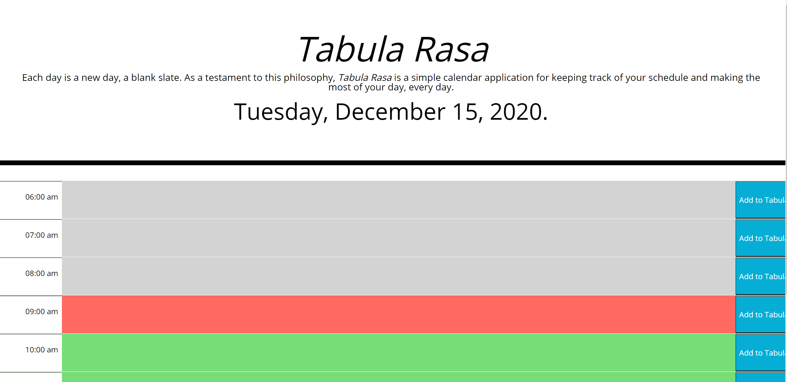

Apps, Projects, and Teaching Tools
Please feel free to explore some of my most recent projects that I have completed along my journey in the Penn LPS Accelerated Course in Web Development and Programming. Click on the images to explore the GitHub repository and live website for each application, or its application page, respectively. For a full resume, please visit my Academia.edu page.
PlantScout
Explore your local plant life with PlantScout
Tabula Rasa
Tabula Rasa (Latin for "blank slate"), is a daily planner application.
Notetakerapp
Take notes for various activities throughout your day with Notetakerapp. Perfect for working from home!
Code Quiz
Code Quiz is a simple application that is based in JavaScript.
Prussian Conquest
Explore how the story of one saint can illuminate the history of northern Poland in the year 1242 with Prussian Conquest, an interactive teaching tool I created with ArcMaps GIS.

ReadMe Generator
Checkout this cool JavaScript Command Line Interface application I made to generate your README document for your future projects. The GitHub page also has an instructional video!
Team Profile Generator
Team Profile Generator is a CLI application where a user can generate employee profiles from their command line using node.js, and the results are written to an HTML file, which can then be loaded in the browser.
Shop & Chef
Live application that is meant to make grocery shopping a new way of travelling. Once you've got an account, you can add items to your list and search over 360,000 recipes. Put some excitement back into your home cooking experience!
Employee Tracker
CLI application that allows the user to set up data sets for various departments, employees, and managerial roles. These can then be updated through the command line of your computer. Very easy to use!